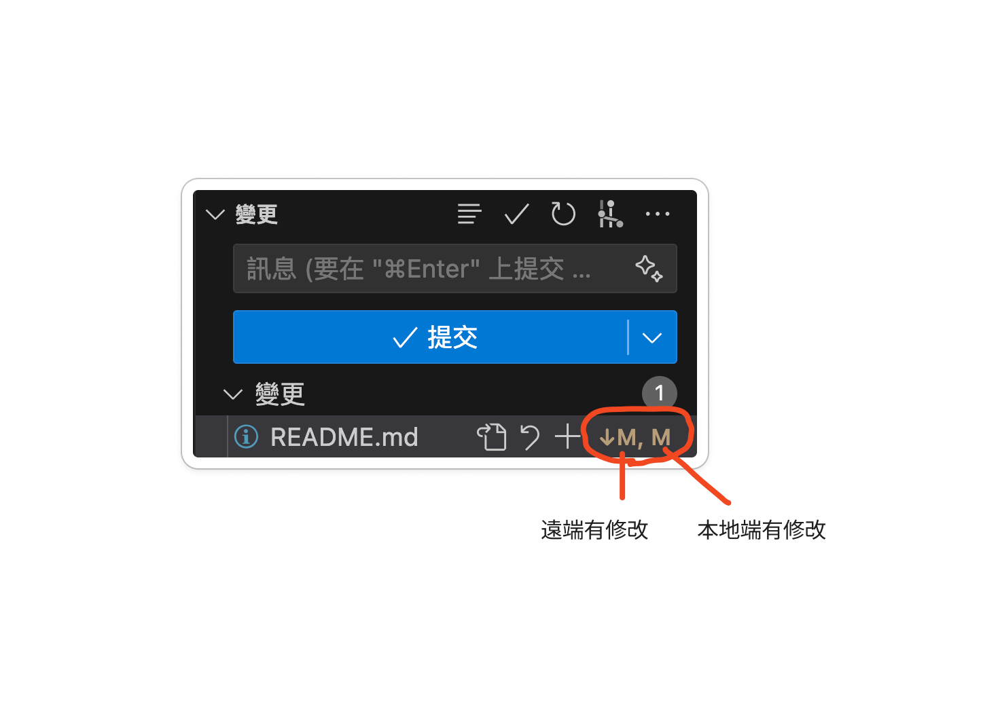
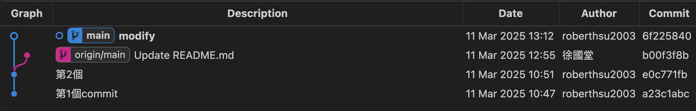
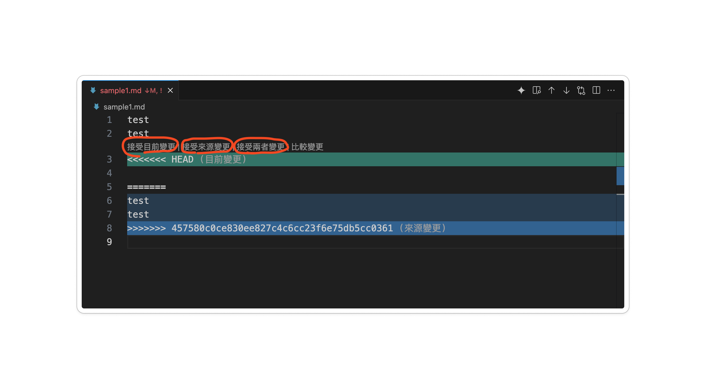

GitHub 常見錯誤：先辨認狀態再處理
這是查詢章節，各節是不同狀況，不要全部連續執行。開始先看 git status、git branch --show-current、git remote -v。下面以 main 與 origin 為例，實際專案要換成正確名稱。
1. push 被拒絕：non-fast-forward
這表示遠端分支更新不能直接由你要推的版本往前移，可能遠端比你新、兩邊分岔，或本地改寫了歷史；push 本身不會在本地執行檔案合併。
git fetch origin
git status
git log --oneline --graph --all --decorate -12若本地 main 只是落後、工作區乾淨，在 main 可用 git pull --ff-only origin main 更新。若兩邊各有提交，先確認哪些內容要保留；初學的合併方式是 git merge --no-edit origin/main，完成檢查後再 push。如果出現衝突，依第 3 節處理。不要直接 force push 共享 main。
自己的未分享提交也可 rebase，但會改寫歷史，詳見 rebase。一般 pull 不保證預設 merge，也不保證一定會建立 merge commit。
2. pull／merge 被未提交修改擋住
常見訊息是 local changes would be overwritten，或 untracked working tree files would be overwritten。這是避免覆蓋目前檔案，不等於已進入合併衝突。
先閱讀 diff 與未追蹤檔案，選一種方法：
- 已完成的工作：在正確任務分支提交，再整合上游。
- 未完成而要保留：
git stash push -u -m "同步前保留草稿"，更新後用git stash apply取回，確認無誤才git stash drop。apply 也可能衝突；-u 不包含被忽略檔案。 - 確認不要的指定檔案修改：才用 restore；未追蹤檔案可先移到專案外保留。
不要把 restore 當預設解法，它會丟掉未暫存內容。編輯器的提示仍要用 git status 確認，不要只看圖示猜測。
3. 合併已開始，CONFLICT (content)
先讀 git status 確認正在 merge 還是 rebase。一般 merge 的衝突可能如下：
<<<<<<< HEAD
本地內容
=======
來源分支內容
>>>>>>> origin/main與同學確認正確結果，手動編輯或使用編輯器的合併工具，移除標記。不能只刪標記而不檢查保留的內容。
一般 merge 完成方式（檔名要換成實際路徑）：git add 實際檔名，再 git commit -m "整合變更並解決衝突"，執行專案檢查後 push。仍在 merge 中，決定取消時用 git merge --abort；它會嘗試回到合併前，因此最好在開始整合前讓工作區乾淨。
若正在 rebase，修正與 add 後用 git rebase --continue；取消用 git rebase --abort。不要用 merge --abort 結束 rebase，也不要在 abort 後照抄 reset --hard HEAD^ 刪掉另一筆提交。
4. pull 已完成，想撤回
先問「已 push 或分享了嗎？」以及「是 fast-forward、merge 還是 rebase？」不能一律 reset 到 HEAD^。
未分享且沒有待保留的未提交內容時，可查 git reflog 找 pull 前的實際識別碼，先建立 backup-before-undo 分支保留目前版本，再評估 reset。ORIG_HEAD 可能記錄操作前位置，但會被後續操作覆蓋，需先 show／reflog 確認；不要直接執行 hard。
已分享時用新的修正 commit；要撤銷整個 merge，需用 git revert -m 主線編號 合併識別碼 並理解哪個父提交是主線與後續合併的影響，不把 -m 1 當通用答案。初學先請老師一起檢查歷史。
5. Authentication failed／Permission denied (publickey)
HTTPS 查 憑證，SSH 查 SSH 設定。確認網址、實際登入帳號、金鑰或 token、儲存庫存取權限。改 user.name 不會解決登入錯誤。
6. origin already exists／src refspec main does not match any
origin already exists：用 git remote -v 查已有設定，必要時 set-url，不要重複 add。
src refspec main does not match any：可能尚未有第一筆 commit，或分支名稱並非 main。用 status、branch 與 log 確認後再提交／推送正確分支，不要為解決錯誤亂建新的空歷史。
7. 課堂衝突練習
兩人在不同任務分支改 README 的同一行，各自提交並送 PR。先合併一份，第二人把 origin/main 合併到自己的分支，按照第 3 節整理成兩人同意的內容，再 push 更新 PR。完成標準：沒有衝突標記，兩人能解釋最終內容與合併方向。
舊版截圖供對照，不代表每個版本的介面與訊息都相同：






